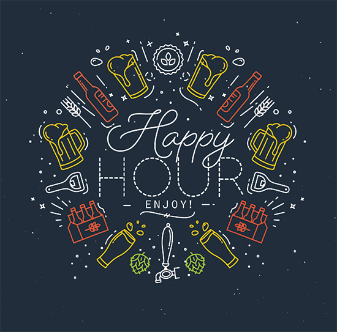

Portfolio
Happy Hour

The overall objective of this project was to configure a solution as to how a person can see individual ingredients that create any desired cockTail of a user's choice. We approached this problem by incorporating the API key of The CockTail Database which provided a wide array of information on cocktail ingredients and measurements. The primary challenge we faced while working on this project dealt with organizing and trimming the information within the arrays. There are some cocktail beverages that only have 3 ingredients, while others may have up to 15. This created a dilemma where by the array of a cocktail with few ingredients also came with a mass of empty array spaces which unwantedly populated our website. We navigated this issue by implementing a conditional that trimmed the value length of the array if the ingredients were less than the original length of the cocktail array. This allows for users to view cocktail ingredients without seeing excessive blank spaces on the website when searching for drinks.
GifTastic

This project involved retrieving data from an external source using AJAX calls for gif displays. It involved a simple manipulation of both arrays and jQuery functions to populate the site with various gifs when searched. A major challenge was figuring out how to pause and animate the gifs when being clicked on. This was resolved by setting up a conditional that altered the data-state within the image attribute, allowing for gifs to freeze and re-animate.
Trivia Game

Trivia is a simple 3 question, timed quiz that keeps score if the user correctly answers each question. A big challenge with this project was solving how to determine if the user's choice was correctly guessed. This was solved through setting up a "right answer" array and creating a conditional around those answers.